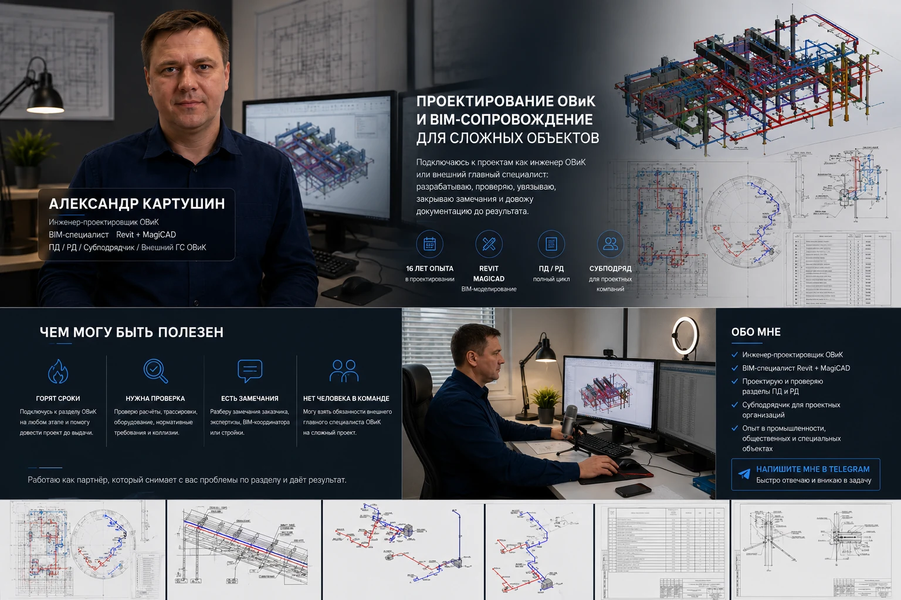
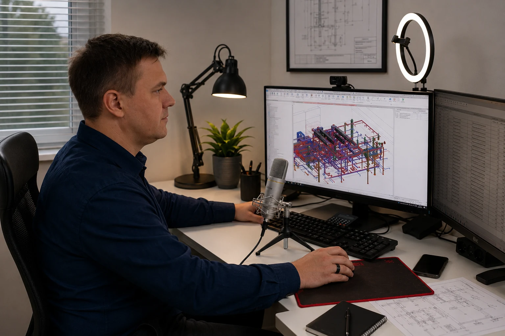
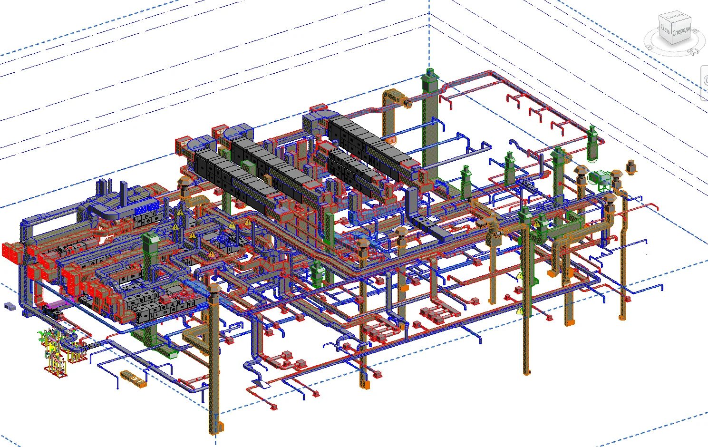
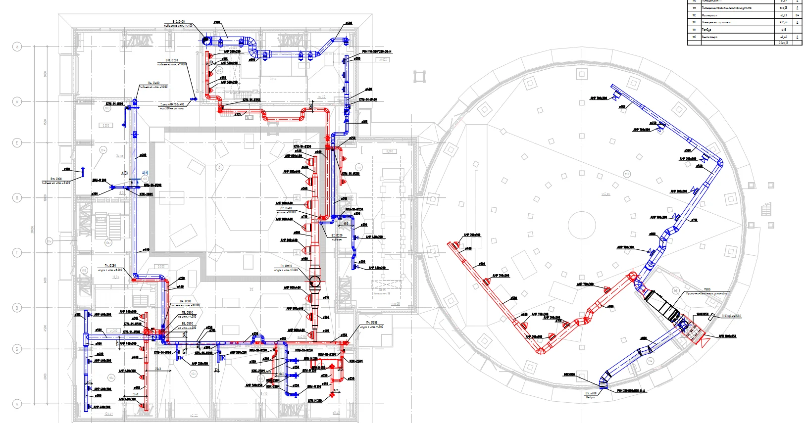
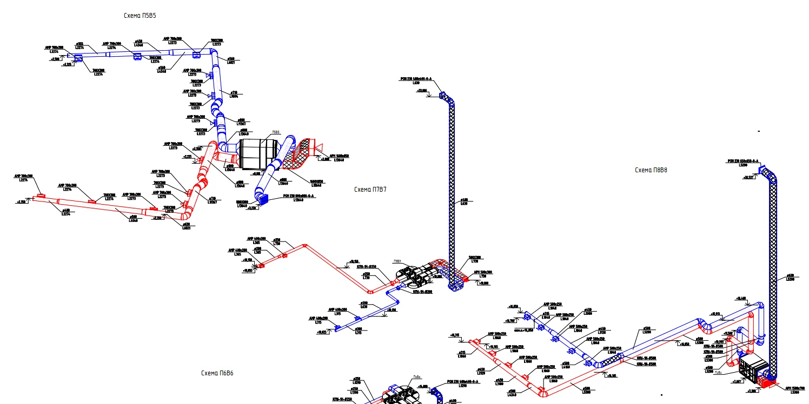
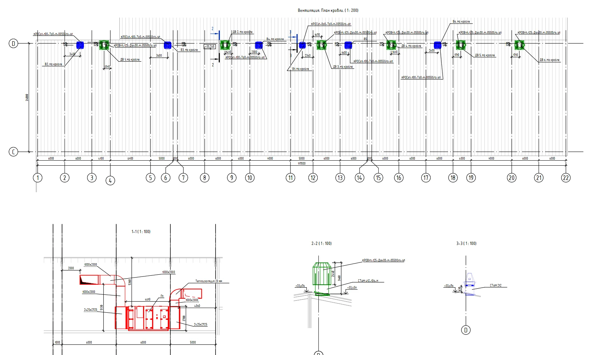
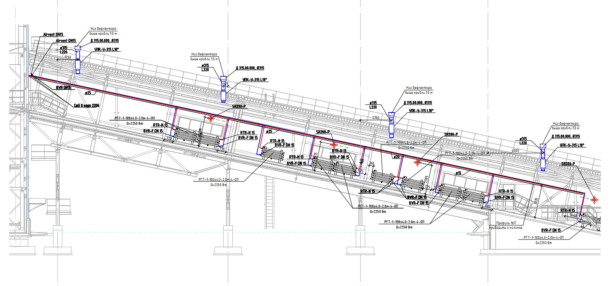
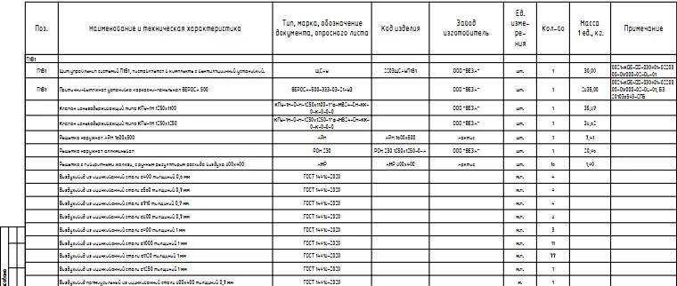

Горят сроки выпуска ПД/РД
Подключусь к разделу ОВиК на любом этапе, помогу довести модель, листы, спецификации и решения до выдачи.
16 лет опыта / Revit + MagiCAD / ПД и РД

Когда подключаться
Подключусь к разделу ОВиК на любом этапе, помогу довести модель, листы, спецификации и решения до выдачи.
Проверю расчеты, трассировку, оборудование, зоны обслуживания, нормативную логику и риски перед отправкой заказчику или ГИПу.
Разберу замечания, предложу корректные решения и помогу закрыть их без разрушения уже принятых проектных решений.
Могу подключиться как внешний главный специалист ОВиК на сложный проект или отдельный этап.
Формат работы
ПД/РД, расчеты, подбор оборудования, трассировка систем, схемы, спецификации, оформление листов.
Модель в Revit + MagiCAD с инженерной логикой: расходы, сечения, диаметры, отметки, спецификации и увязка со смежниками.
Проверка расчетов, трассировки, оборудования, нормативных требований, коллизий и рисков перед выдачей.
Разбор замечаний заказчика, экспертизы, BIM-координатора или стройки с корректировкой решений и доведением до результата.
Работаю с вентиляцией, отоплением, кондиционированием, холодоснабжением, ИТП, аспирацией и противодымной вентиляцией.
Опыт и специализация
Я занимаюсь проектированием ОВиК более 16 лет. Работаю с промышленными, общественными, гостиничными, жилыми и специальными объектами. Могу вести раздел от исходных данных до выпуска ПД/РД, подключаться к отдельному этапу, проверять чужие решения и закрывать замечания.

Объекты участия
На главной оставлены сильные объекты, которые быстрее показывают масштаб опыта. Полный список раскрывается по кнопке.
Корпуса фильтрации, сгущения, отгрузки и загрузки концентрата. Вентиляция, аспирация, отопление, теплоснабжение, BIM/Revit-модель.
Реконструкция и техническое перевооружение ТОФ, главный корпус: отопление, вентиляция, теплоснабжение, холодоснабжение, кондиционирование и дымоудаление.
Реконструкция обогатительной фабрики, отделение измельчения: вентиляция, дымоудаление и кондиционирование.
Основное здание, гостевые дома, дымоудаление, кондиционирование, тепловые сети, ИТП и VRF-системы.
Спальный корпус, хореографические залы и апартаменты: отопление, кондиционирование воздуха и VRF-системы.
Реконструкция 1 и 2 блока, сооружения очистки возвратных потоков, склады и гараж спецтехники.
Блок климокамер и центр селекции в Краснообске: отопление, вентиляция, кондиционирование и теплоснабжение.
Модульное здание общежития для рабочих на 112 человек. Система дымоудаления.
Здание очистных сооружений: отопление, вентиляция, кондиционирование воздуха, теплоснабжение.
Промышленный объект мощностью 700 000 тонн в год. Отопление, теплоснабжение, вентиляция, противодымные системы.
Ремонт помещений: отопление, вентиляция, кондиционирование воздуха.
Модернизация столовой: отопление, вентиляция, кондиционирование воздуха.
Техническое перевооружение производства: отопление, вентиляция, кондиционирование воздуха.
Водоподготовка бассейна, раздел ТХ.
Производственное здание: отопление, вентиляция, дымоудаление, кондиционирование воздуха.
Производственное здание: отопление, вентиляция, дымоудаление, кондиционирование воздуха.
Капитальный ремонт палат для МГН: отопление, вентиляция, кондиционирование, теплоснабжение существующих систем.
Комплекс хозяйственно-питьевого водоснабжения ВОС-1200: отопление и вентиляция.
Приспособление объекта культурного наследия: отопление, вентиляция, кондиционирование воздуха, ИТП.
Подраздел ИТП для общеобразовательной школы.
Общеобменная вентиляция и дымоудаление.
Отопление, вентиляция, кондиционирование воздуха, теплоснабжение.
Отопление, вентиляция, теплоснабжение, ИТП и узел учета тепла.
Модульный блок доочистки воды ВОС-4500: отопление и вентиляция.
Корпус сгущения хвостов, корпус отгрузки концентрата, ввод тепловой сети и опросные листы оборудования.
Отопление, теплоснабжение, приточно-вытяжная вентиляция.
Пассажирские обустройства: отопление, вентиляция, кондиционирование.
Главный корпус, отделение измельчения: отопление, теплоснабжение/ИТП, механическая вентиляция, аспирация.
Встроенные помещения, подземная автостоянка, секции 1-11: вентиляция и дымоудаление.
Кейсы

BIM-увязка сложного объекта

Вентиляция общественного объекта

ПД/РД без лишнего шума



Как работаю
Архитектура, технология, стадия, сроки, требования, текущие проблемы и границы ответственности.
Шахты, венткамеры, трассы, оборудование, зоны обслуживания, смежные разделы и нормативные требования.
Расчеты, модель, планы, схемы, спецификации, увязка в Revit + MagiCAD.
Проверка комплекта, корректировки, закрытие замечаний и сопровождение до результата.
Контакты
Укажите стадию проекта и сроки. Я быстро оценю, чем могу быть полезен и какие исходные данные нужны для старта.